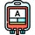

<agm-map style="height: 300px" [zoom]="15" [latitude]="latitude" [longitude]="longitude">
  <agm-marker [latitude]="latitude" [longitude]="longitude" [iconUrl]='"assets/BloodGroup/blood-type-a.jpg"'>
    <agm-snazzy-info-window [maxWidth]="200" [closeWhenOthersOpen]="true">
      <ng-template>
        <!--  -->
        My first Snazzy Info Window!
      </ng-template>
    </agm-snazzy-info-window>
  </agm-marker>
</agm-map>
